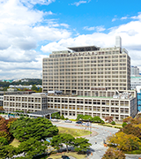

1997

- 부서명 [진료의뢰센터] 개소
- 지역 병원 의사 진료의뢰 응대목적
2002
제 1대 조성원 교수
- 2006 제1진료부원장 직속으로 변경
인력 3명
2004
제 2대 김흥수 교수
- 2005 개방병원 도입 운영
인력 3.5명
2006
제 3대 신준한 교수
- 2006 본관 고객안내센터 이관
인력 8.5명
2010
제 4대 김세혁 교수
- 2011 [직제개편] [진료협력센터](Referral center)로
부서명 개칭 협력병원 업무 이관
[정관개정] 의료원 규정집에 직무분장 상정
2012
제 5대 이관우 교수
- 2013. 02 [공간이전] 현 공간 확대이전
인력 8.5명
2014
제 6대 김대중 교수
- 2015. 03 전화예약센터(컨택센터) 이관(정규간호사 5인
투입) 팀장, 파트장 보직신설(총인력 15명) - 2016. 05 보건복지부 진료의뢰회송 시범사업 개시(심평원)
- 2018. 04 인력 조정(본관 10명+컨택 1명+예약센터 2명)
2018
제 7대 신승수 교수
- 2019 진료정보교류사업」거점병원 선정 (보건복지부)
- 2020. 07 「처음오신분/외래회송 안내」개소
- 2020. 10 「진료정보교류시스템」오픈 (ICT기반 공로 보건
복지부장관표창) - 2020. 11 신규개원 (3개월내) 협력병원 화분배송서비스
시작 - 2021. 03 의료원소식지 內 「협력병의원 탐방기사」
게재 시작 - 2022. 03 인력증원 결정(진료협력 간호사1, 컨택 상담사2)
- 279개소 -> 現 457개소 (종합11, 병원28, 의원418)
- 現 진료협력 13명+컨택 33명
2022
제 8대 송지훈 교수
- 2022. 06 처음오신분/외래회송 창구 분리(본관+웰빙)
컨택센터 휴일근무 휴무